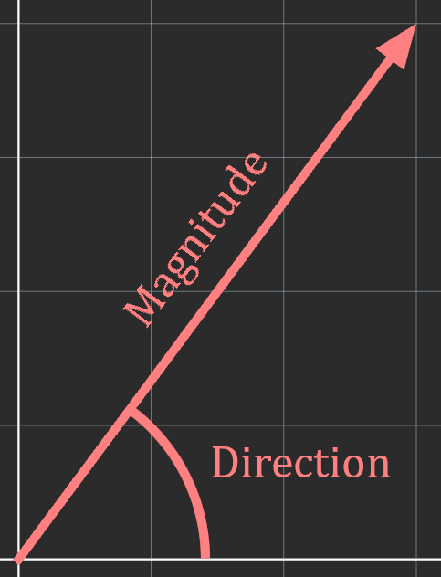
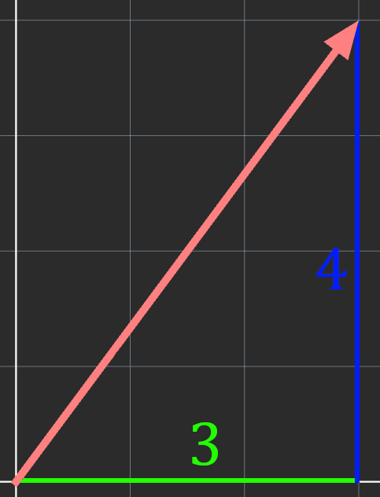

Linear algebra is a branch of mathematics which mainly deals with vector spaces and linear transformations.
These concepts can be represented through vectors and matrices.
The basics of many of these concepts can be explained much more clearly through a geometric intuition.
For now, you can think of vectors as a special type of quantity which cannot be represented by just one value.
The exact value of a vector varies slightly from field to field. For instance, in physics, a vector is anything with a
magnitude and a direction, while in other cases, a vector can simply be thought of as a list of numbers.
More generally, a vector is anything in which vector addition and scalar multiplication can be meaningfully applied to.
In this section, we'll explain what a vector is in simpler terms, and the many ways to represent them.
Magnitude and Direction
This interpretation is most often used in physics, where the magnitude represents the strength/amount/etc. of some quantity,
while the direction represents, well, which direction it is in. Example:
Velocity is a vector quantity, it has a speed (magnitude), and a direction.
Speed is a scalar quantity. This means that it is not affected by direction, and can be represented by one value.
Scalar Quantities
Mass
Temperature
Energy
Length
Vector Quantities
Weight
Acceleration
Displacement
Force
Visual Interpretation
Visually, vectors are drawn as an arrow starting from the origin, where the length is the magnitude.
It is important to realize that a vector can have any amount of dimensions. Most of the examples will be using 2D vectors
as they are easier to understand.
Although we tend to draw them from the origin, an important aspect of vectors is that their starting point doesn't affect
the actual value in any way.

Vector Components
The coordinates of the arrow tip can be used as another method of representing a vector; that is through individual components.
For example, the vector we were looking at can be represented with components 3, 4.
Logically, the amount of components a vector has is the same as its dimension.
Generally this form is better for performing operations on and doing math with so most of the vectors we'll be dealing with will be in component form.

Vector Notation
We'll look at two common notations for now, the first notation is the same as a point, but either using parenthesis (),
square brackets [], or angle brackets ⟨⟩.
Ex. ⟨3, 4, -2⟩
The second notation we'll look at is matrix notation. This notation is better for vectors which interact with matrices.
They are written as a list of numbers enclosed in square brackets, where each number represents a component.
There are two ways we can write a vector in matrix notation, either as a row vector or as a column vector.
The only practical difference between a column vector and a row vector is for convenience. We generally use column vectors when working with matrices,
as they tend to take up less space.
Keep in mind that both types of vectors can't be used in the same expression.
Vector Variables
Vector variables are often written as a lowercase letter either in boldface, or with a right facing arrow on top.
Ex. \(\pmb{v}\) or \(\vec{v}\)
The magnitude is typically denoted by two vertical bars on each side of the vector, but a single bar on each side works as well.
Ex. \(\left\|\vec{v}\right\|\) or \(\mid\vec{v}\mid\)
Summary
Linear algebra is a branch of mathematics which concerns itself with vector spaces and linear transformations. Vectors have many different but related definitions, for now they can be thought of as a special type of
quantity which can't be represented by just one value.
Vectors can be represented using magnitude and direction, or through individual components.
Visually they are drawn as an arrow from the origin.
For now we'll be notating vectors like a point with angled brackets or with matrix notation.